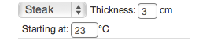
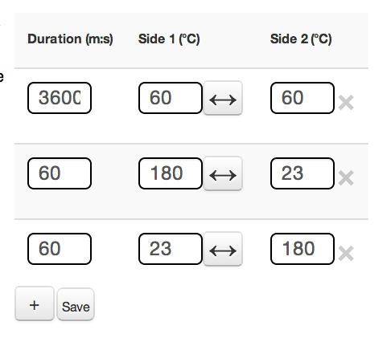
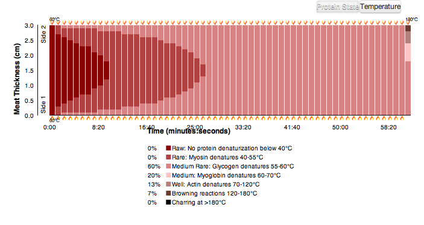
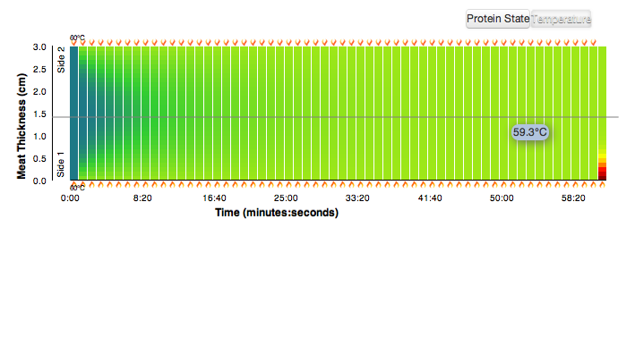

This simulation visualizes heat transfer throughout various kinds of meat. First, you can input starting values for the meat. The maximum meat thickness is 35 cm since we’re assuming you’re not trying to cook a whole cow. The initial temperature must be between absolute zero(-273 degrees) and 300 degrees. If the physical steak you’re cooking is starting out at a temperature outside of this range, please contact the National Journal of Physics or your local burn ward.
Next, you can input the specific instructions for the steak. Use the +/- buttons to add and delete rows. The maximum duration of a step is 2 hours since you shouldn’t be slaving away that long anyways. The highest temperature you can cook your steak is 300 degrees, which is the highest heat most gas ovens can reach. In this example, the steak was cooked for 60 minutes at 60 degrees on both sides and then seared at 180 degrees on each side for a minute each. Lastly, the steak rested at room temperature for 20 minutes.
After you press the “Let’s get cooking!” button, this graph appears. It shows how the internal temperature of a thin slice of the center of the steak changes over time. The flame represents which side of the steak the heat is applied to. Inside the flame is the temperature of the heat source for that side. When you mouseover a slice of steak, the legend highlights the information pertaining to the position of your mouse. In addition, the current temperature at the point of your mouse is displayed on the top of the graph. You can also make live updates to your instructions and the steak will “re-cook” to show the internal temperatures.
However, proteins do not "re-nature" once the temperature has cooled. To demonstrate this, we show the maximum temperature reached at each point in the meat to visualize the state of the proteins within the meat.
This visualization was created by MIT students Kate Roe, Laura Breiman, and Marissa Stephens for the 2013 edX course Science & Cooking: From Haute Cuisine to Soft Matter Science taught by Harvard professor Michael Brenner. It demonstrates the heat diffusion through meat over time.